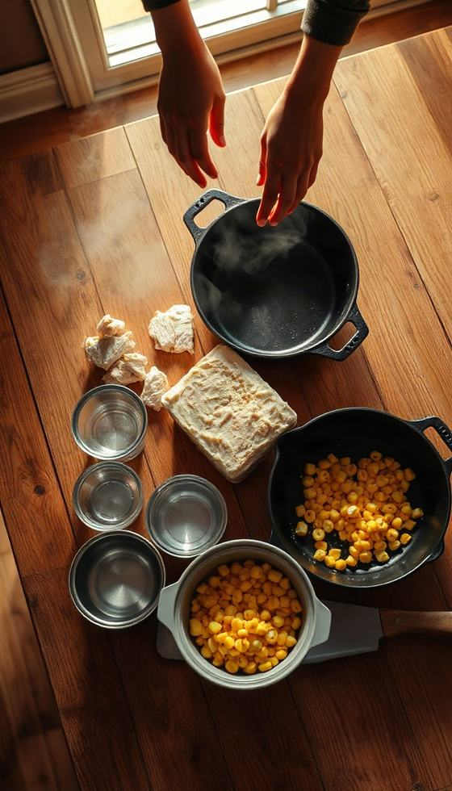
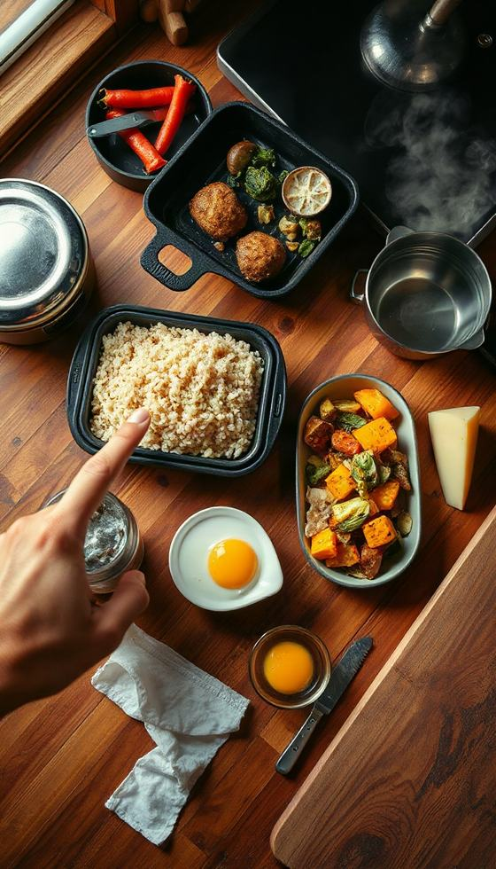
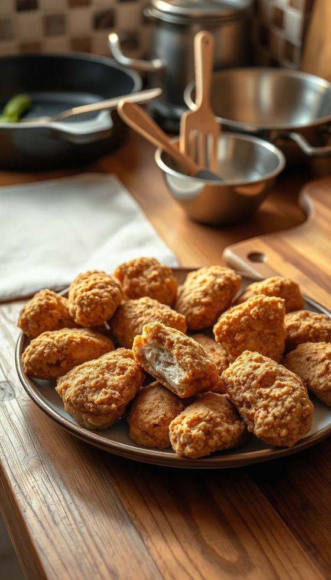
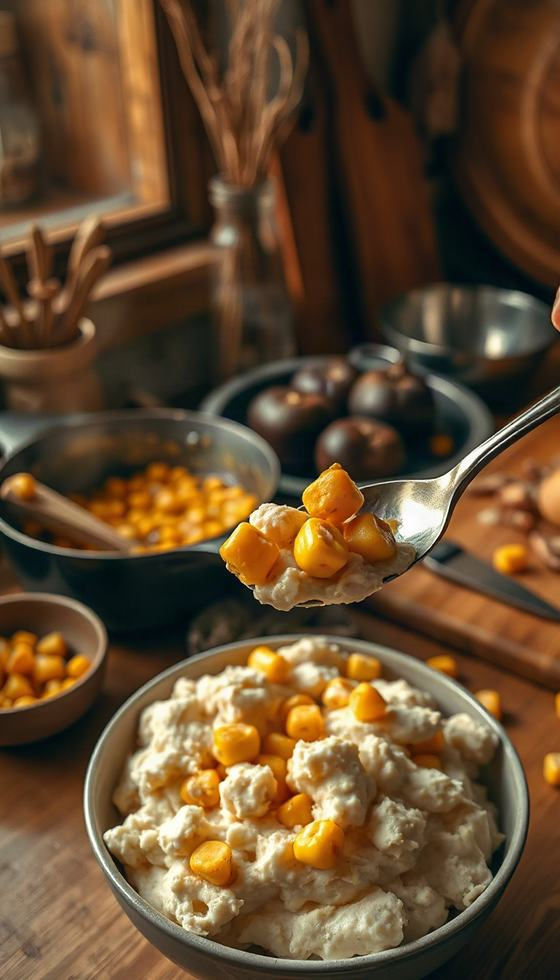

Budget Bite Club
Budget Bite ClubCopycat KFC Famous Bowl: Leftover Turkey Edition (Popcorn Turkey, Mash, Corn, Gravy & Cheese)
About $4.91* · 2 servings · 18 min
*Prices are estimates and may differ from what you pay. How we price recipes
Leftover turkey, cold mash and half a can of corn just became crunchy popcorn turkey Famous Bowls. 🍗





Ingredients
- 1/2 cup (120 mL) vegetable oil, for shallow frying
- 150 g (about 1 1/2 cups) leftover cooked turkey, cut into 2 cm popcorn-size chunks
- 1/2 cup (65 g) all-purpose flour
- 1 tsp paprika, 1/2 tsp garlic powder, 1/2 tsp salt, 1/4 tsp black pepper
- 1 egg beaten with 1 tbsp water
- 2 cups (about 400 g) leftover mashed potatoes
- 1/2 can (about 3/4 cup drained) canned corn, from a 341 mL can
- 1 cup leftover turkey gravy
- 1/2 cup (50 g) shredded cheddar, from a block
Steps
- Pour the oil into a 25 cm (10-inch) skillet. It should sit about 5 mm deep. Heat over medium-high for about 4 minutes, until it reaches 175°C (350°F) or a pinch of flour sizzles right away.
- While the oil heats, mix the flour, paprika, garlic powder, salt and pepper in a bowl. Toss the turkey chunks in the seasoned flour, dip them in the beaten egg, then toss them in the flour again. Let them sit on a plate for 2 minutes.
- Meanwhile, heat each leftover in its own covered microwave-safe bowl. Give the mashed potatoes about 3 minutes and stir halfway, adding a splash of milk or water if they're stiff. Drain the corn and give it about 1 minute. Heat the gravy for about 2 minutes, stirring once, until it is bubbling. All leftovers must be steaming hot, 74°C (165°F).
- Fry the turkey in a single layer for 1 1/2 to 2 minutes per side, until deep golden and crisp. The turkey is already cooked, so you are only crisping the coating and heating it through to 74°C (165°F). Drain on a paper towel.
- Build two bowls. Start with a cup of hot mash in each, then add a spoonful of corn and the popcorn turkey. Pour the hot gravy over everything and finish with the cheddar. The heat from the gravy melts the cheese in about 30 seconds. Serve right away.
What you'll need
Gear links go to Amazon (Amazon.ca, or Amazon.com in the US). As an Amazon Associate I earn from qualifying purchases, at no extra cost to you.
Watch the videoMore $5 recipes
About the prices: they're estimates, not quotes. Since Nov 2026 they're based on Statistics Canada's monthly average retail prices where an item is listed (Open Government Licence - Canada), otherwise on typical Canadian grocery prices, and count only the amount of each ingredient used, not whole packages. What you pay will vary by store, location, brand, sales, taxes and date, and any pantry staples you need to buy will add to it. Recipe visuals and narration are AI-generated.